English translation of the RoboParty internal document. Original Chinese is kept in collapsible blocks under each section.
Source: 萝博头原型机（RoboParty Roboto Origin）走线说明 (Feishu wiki, space “【内部】RoboParty Roboto Origin资料”, author “萝博派对”, last modified 2 Sep 2026). Retrieved 12 Oct 2026.
Purpose of this page
This document describes how the Roboto Origin prototype is wired: which harness goes between which pair of joint motors, how the battery, charging port, main power switch, emergency stop, three‑in‑one power board and the RDK X5 computer are installed and connected, and how the harnesses and CAN ports are secured against vibration. The robot is symmetric, so the source only shows the right leg and the left arm; the other side is mirrored. The waist is a separate run with its own instructions.
Quick reference
Item
Value
Robot
RoboParty Roboto Origin prototype (萝博头原型机)
IDs used in this doc
All motor numbers are Slave IDs (hex).
Left leg chain
0x01 → 0x02 → 0x03 → 0x04 → 0x05 → 0x06
Right leg chain
0x07 → 0x08 → 0x09 → 0x0A → 0x0B → 0x0C
Waist
One motor, 0x0D, chained to right‑leg motor 0x07
Left arm chain
0x0E → 0x0F → 0x10 → 0x11 → 0x12
Right arm chain
0x13 → 0x14 → 0x15 → 0x16 → 0x17
Power board CAN channels
CAN0 ← motor 0x01 (left leg) · CAN1 ← motor 0x0D (waist + right leg) · CAN2 ← motor 0x0E (left arm) · CAN3 ← motor 0x13 (right arm). Order rule: left before right, legs before arms. Follow the silkscreen on the PCB.
Compute
RDK X5. USB → Type‑C cable to the USB‑to‑CAN port of the three‑in‑one power board; Type‑C → Type‑C from the board’s 5 V output to the RDK X5 power input; IMU and gamepad receiver plug into RDK X5 USB directly.
Connectors
XT30U‑F (power only) and XT30(+2)‑F.G.B (XT30 with two extra signal pins carrying CAN). Voltage display uses a GH1.25 connector. Charging socket is a 3‑pin circular (aviation‑style) connector on the back panel.
Motors seen in photos
DM‑J10010L‑2EC (hip) and DM‑J4340P‑2EC; each has a power port and a RS485 A B | CAN H L signal port.
Harness clips at every port; UV glue on CAN connectors so they cannot pull out during motion.
Joint map (transcribed from Fig. 1)
Component ID and joint name as printed on the overview drawing; Master ID = Slave ID + 0x10. “Left/right” are the robot’s own left/right.
#
Joint (CN)
Joint (EN)
Slave ID
Master ID
Bus
1
左髋旋转
Left hip rotation (yaw)
0x01
0x11
CAN0
2
左髋侧摆
Left hip side swing (roll)
0x02
0x12
3
左髋前摆
Left hip forward swing (pitch)
0x03
0x13
4
左膝
Left knee
0x04
0x14
5
左踝上
Left ankle, upper
0x05
0x15
6
左踝下
Left ankle, lower
0x06
0x16
7
右髋旋转
Right hip rotation (yaw)
0x07
0x17
CAN1
8
右髋侧摆
Right hip side swing (roll)
0x08
0x18
9
右髋前摆
Right hip forward swing (pitch)
0x09
0x19
10
右膝
Right knee
0x0A
0x1A
11
右踝上
Right ankle, upper
0x0B
0x1B
12
右踝下
Right ankle, lower
0x0C
0x1C
13
躯干旋转
Torso rotation (waist yaw)
0x0D
0x1D
14
左肩前摆
Left shoulder forward swing (pitch)
0x0E
0x1E
CAN2
15
左肩侧摆
Left shoulder side swing (roll)
0x0F
0x1F
16
左肩旋转
Left shoulder rotation (yaw)
0x10
0x20
17
左肘
Left elbow
0x11
0x21
18
左臂旋转
Left arm rotation (forearm)
0x12
0x22
19
右肩前摆
Right shoulder forward swing (pitch)
0x13
0x23
CAN3
20
右肩侧摆
Right shoulder side swing (roll)
0x14
0x24
21
右肩旋转
Right shoulder rotation (yaw)
0x15
0x25
22
右肘
Right elbow
0x16
0x26
23
右臂旋转
Right arm rotation (forearm)
0x17
0x27
The “Bus” column is derived from section 2.5 (which motor feeds which CAN channel) and the chain order in section 2; it is not printed on the drawing.
1. Harness BOM
Context
Twelve harness types are listed. Column meanings: part number (with the joint pair it serves), connector/cable type, finished length, quantity, and remarks about connector orientation. The parenthetical “gh1.25 2pin 反线 NN cm” on the leg/body entries describes an accompanying GH1.25 2‑pin reverse‑wired lead of the stated length. “90°” refers to right‑angle connector exits; “上下” (top/bottom) and “同向” (same direction) describe where the CAN wires leave the connector.
No.
Harness type
Length
Qty
Remarks
RBW_Origin_01 Arm01
XT30(+2)‑F.G.B — XT30(+2)‑F.G.B
20 cm
2
90° at both ends, CAN wires exit top/bottom
RBW_Origin_02 Arm02
XT30(+2)‑F.G.B — XT30(+2)‑F.G.B
20 cm
2
90°, CAN wires top/bottom ×2
RBW_Origin_03 Arm03
XT30(+2)‑F.G.B — XT30(+2)‑F.G.B
20 cm
2
90° at both ends, CAN wires same direction ×2
RBW_Origin_04 Arm04
XT30(+2)‑F.G.B — XT30(+2)‑F.G.B
20 cm
2
90° at both ends, CAN wires top/bottom ×2
RBW_Origin_05 Leg01
XT30U‑F — XT30U‑F (GH1.25 2‑pin reverse lead 30 cm)
25 cm
2
RBW_Origin_06 Leg02
XT30U‑F — XT30U‑F (GH1.25 2‑pin reverse lead 30 cm)
25 cm
2
RBW_Origin_07 Leg03
XT30U‑F — XT30U‑F (GH1.25 2‑pin reverse lead 50 cm)
40 cm
2
RBW_Origin_08 Leg04
XT30U‑F — XT30(+2)‑F.G.B (GH1.25 2‑pin reverse lead 35 cm)
30 cm
2
90° on the (2+2) end
RBW_Origin_09 Leg05
XT30(+2)‑F.G.B — XT30(+2)‑F.G.B
10 cm
2
1: side‑exit 90° (left); 2: side‑exit 90° (right). Keep the CAN‑wire orientation consistent at assembly (top/bottom as soldered).
RBW_Origin_10 Body01
XT30U‑F — XT30U‑F (GH1.25 2‑pin reverse lead 30 cm)
20 cm
1
RBW_Origin_11 Body02
XT30(+2)‑F.G.B — XT30(+2)‑F.G.B
20 cm
2
90° at one end ×2
RBW_Origin_12 Body03
XT30(+2)‑F.G.B — XT30U‑F (GH1.25 2‑pin reverse lead 65 cm)
60 cm
1
The source table has three further empty rows. Section 2.5 also uses a RBW_Origin_13 Body04 harness (XT30(+2)‑F.G.B — XT30U‑F, 50 cm) that is not in the BOM; see notes.
The robot has a symmetric structure and the wiring rules are the same on both sides. The text below describes only the right leg and the left arm; wire the right arm and left leg the same way by mirroring. The waist is an independent cable run and must be wired as described in 2.2.
Solder the main power‑switch connector and the emergency‑stop switch (Fig. 17).
⚠️ Check the wire order — do not get it wrong! (Fig. 18, 19)
Switch specification and photo of the real part: Fig. 20, 21. The switch’s lead colours map to: green → C (common), yellow → NO (normally open), white → NC (normally closed), black + red → lamp (lamp pins have no polarity). Variants: single‑colour 5‑pin, dual‑colour 6‑pin and 7‑pin.
How the PCB backplate silkscreen maps to the real connection: Fig. 22, 23. Backplate pads for the main switch are 5V, GND, 5V_OUT, LED+; the E‑stop goes on 48VIN / 48V (Fig. 18).
After testing that everything works, cut off the excess wire.
Note: go by the position of the wires on the switch — the colour order of the wires may differ from batch to batch.
Fig. 19 — Switch lead soldered to the 5V / GND / 5V_OUT / LED+ pads (wire colours differ between batches).
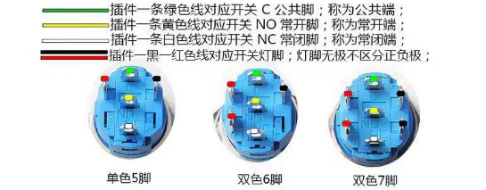
Fig. 20 — Switch pinout: green = C (common), yellow = NO, white = NC, black + red = lamp (no polarity). 5‑pin single‑colour, 6‑ and 7‑pin dual‑colour variants.
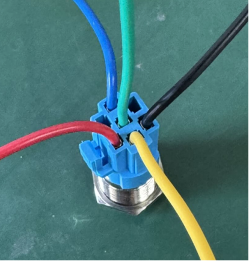
Fig. 21 — The push‑button switch with its 5‑wire lead.
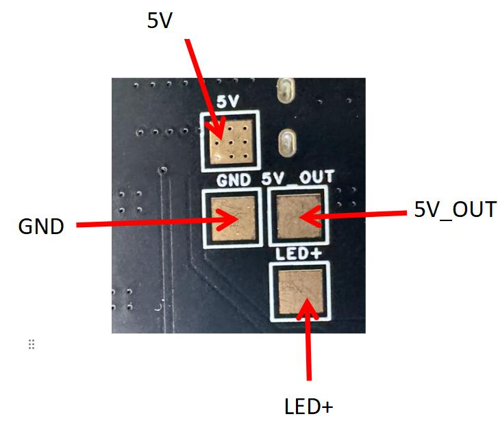
Fig. 22 — Close‑up of the main‑switch pads: 5V, GND, 5V_OUT, LED+.
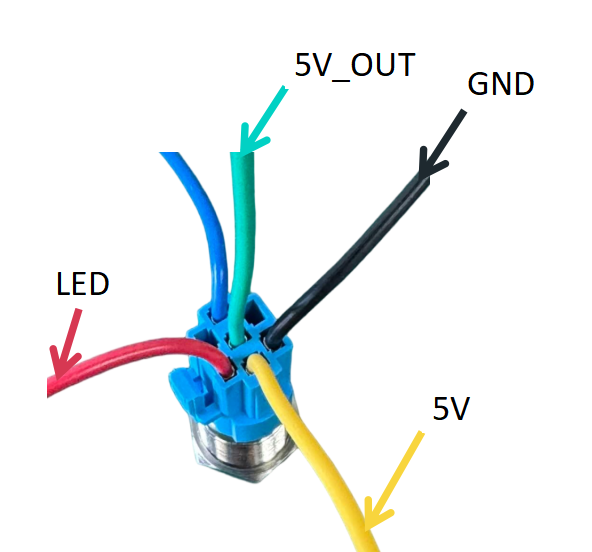
Fig. 23 — Which switch wire goes to which pad (this batch): 5V = yellow, GND = black, 5V_OUT = green, LED = red; blue unused.
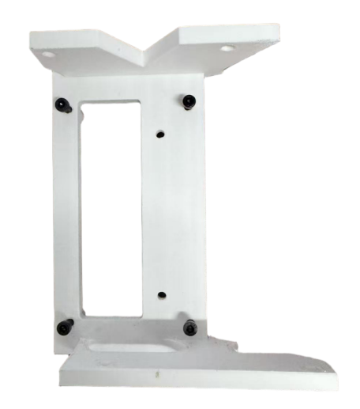
Fig. 24 — 3D‑printed PCB carrier fixed with M3×16 screws from the underside.
The free (second) connector of motors 0x0E, 0x13, 0x01 and 0x0D all go to the three‑in‑one power board.
Channel
Link
Harness
Type
Length
CAN0
Motor 0x01 – power board
RBW_Origin_12 Body03
XT30(+2)‑F.G.B — XT30U‑F
60 cm
CAN1
Motor 0x0D – power board
RBW_Origin_13 Body04
XT30(+2)‑F.G.B — XT30U‑F
50 cm
CAN2
Motor 0x0E – power board
RBW_Origin_11 Body02
XT30(+2)‑F.G.B — XT30(+2)‑F.G.B
20 cm
CAN3
Motor 0x13 – power board
RBW_Origin_11 Body02
XT30(+2)‑F.G.B — XT30(+2)‑F.G.B
20 cm
Motors connect to the power board following the rule left before right, legs before arms: motor 0x01 → CAN0, motor 0x0D → CAN1, motor 0x0E → CAN2, motor 0x13 → CAN3. The PCB carries matching silkscreen labels; install according to the silkscreen.
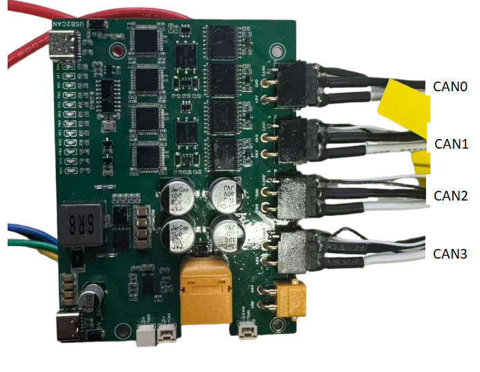
Fig. 31 — CAN0–CAN3 connections on the three‑in‑one power board.Original Chinese (2.5)
The RDK X5 uses a USB‑A to Type‑C cable from one of its USB ports to the USB‑to‑CAN port on the three‑in‑one power board (Fig. 32, 33).
The RDK X5 uses a Type‑C to Type‑C cable from the 5 V supply port on the three‑in‑one power board to the RDK X5 power input (Fig. 34, 35).
The IMU and the gamepad receiver plug directly into the RDK X5 USB ports (Fig. 36).
The voltage display connects via a GH1.25 connector.
The port layout and pin definitions of the three‑in‑one power board are shown in Fig. 37, 38. Follow the silkscreen exactly and avoid reversed connections.
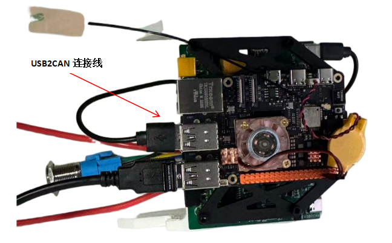
Fig. 32 — USB2CAN cable (USB‑A on the RDK X5 → Type‑C on the power board).
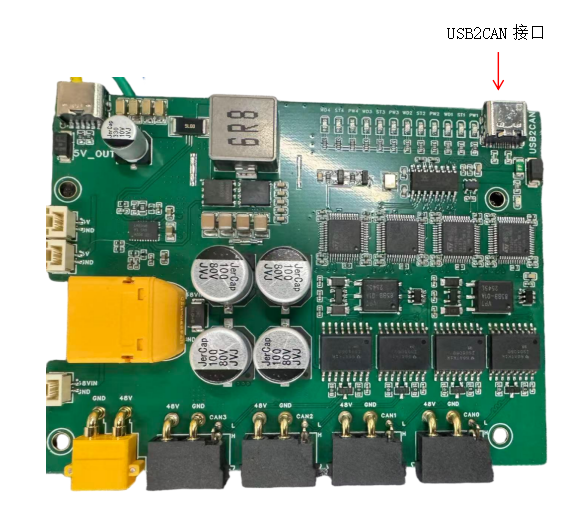
Fig. 33 — USB → Type‑C to the USB‑to‑CAN port (B).
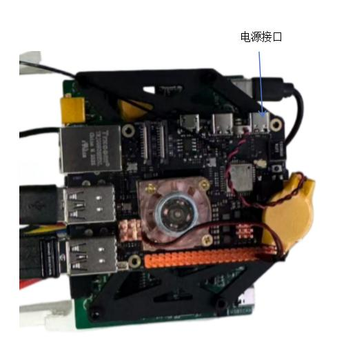
Fig. 34 — RDK X5 power input (Type‑C, labelled 电源接口).
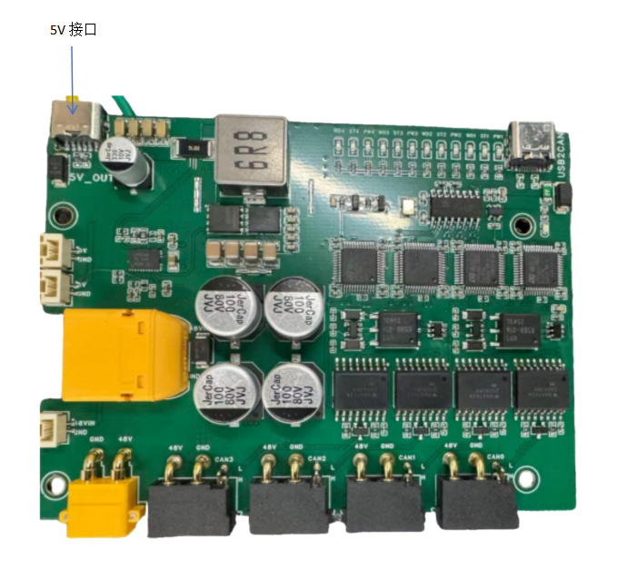
Fig. 35 — Type‑C → Type‑C 5 V supply (B).
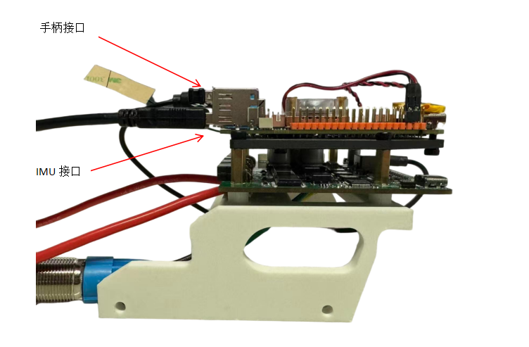
Fig. 36 — Gamepad receiver port and IMU port on the RDK X5 USB stack.
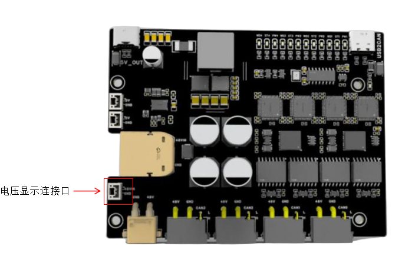
Fig. 37 — Power board render: voltage‑display connector (GH1.25) highlighted; 48V/GND + CAN0–CAN3 headers along the bottom edge, USB2CAN and 5V_OUT Type‑C on top.
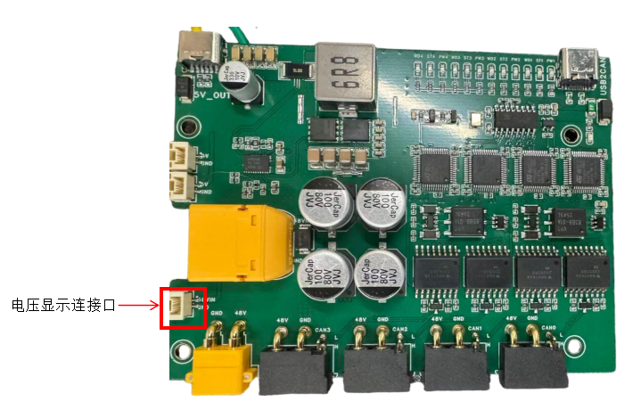
Fig. 38 — Same board, photo: voltage‑display connector next to the 48VIN XT60.
Original Chinese (2.6)
2.6 板间连接
RDKx5使用usb to typec线束，通过 USB 接口连接三合一供电板上的 USB-to-CAN 接口。
RDKx5使用typec to typec 线束，通过三合一供电板上的 5v供电接口接入RDKx5供电口。
IMU 与手柄接收器则通过 USB 接口直接连接至RDKx5。
电压显示连接口为gh1.25口。
三合一供电板的接口布局与定义如下所示，连接时请严格参照丝印标识，避免反接。
3. Fixing
3.1 Harness fixing
Instructions
Use harness clips (cable retainers) to fix each harness at its port, so that a loosening connector cannot cause unstable signal transmission (Fig. 39).
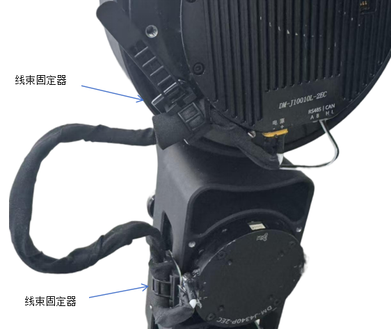
Fig. 39 — Harness clips (线束固定器) at the motor ports; the motor signal port is labelled RS485 A B | CAN H L.Original Chinese (3.1)
To stop CAN connectors from coming loose or being torn off during motion, reinforce the ports with UV‑curing glue (Fig. 40).
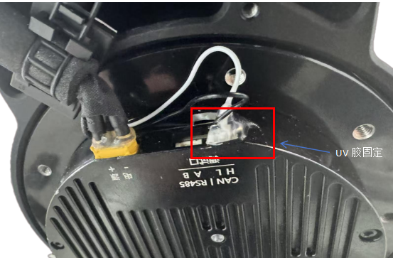
Fig. 40 — CAN connector reinforced with UV glue (UV 胶固定).Original Chinese (3.2)
3.2 端口固定
为防止 CAN 端口在运动过程中发生脱落或拽断，可使用 UV 胶对端口进行加固固定。
Translator’s notes and discrepancies
RBW_Origin_13 Body04 (CAN1, motor 0x0D → power board, XT30(+2)‑F.G.B — XT30U‑F, 50 cm) is used in 2.5 but missing from the BOM table in section 1.
For the leg/body harnesses the parenthetical GH1.25 lead length (30/30/50/35/30/65 cm) is 5–10 cm longer than the harness length column (25/25/40/30/20/60 cm). The translation keeps both numbers as written.
The waist motor 0x0D feeds the power board on CAN1 and chains into right‑leg motor 0x07, so CAN1 carries the waist + right leg, and CAN0 carries the left leg. This matches the bus assignment used in tools/README.md (can0 left leg, can1 right leg + waist).
“XT30(+2)‑F.G.B” is reproduced verbatim; it denotes the XT30 power connector with two additional signal pins (XT30(2+2)) used for CAN H/L. The meaning of the suffix “F.G.B” is not explained in the source.
The source does not state which USB port on the RDK X5 to use, nor the wire colours for the switch/E‑stop; it explicitly says colour order varies between batches, so go by position.
Image captions are derived from the surrounding text, not from the images themselves.
Glossary (Chinese → English)
Chinese
English
走线说明
wiring / cable‑routing guide
线材 BOM 表 / 线束
harness BOM / harness (cable assembly)
反线
reverse‑wired lead (pin order swapped end to end)
双头 90° / 单头 90°
right‑angle connector at both ends / at one end
can 线上下 / 同向
CAN wires exit top/bottom / same direction
腿部 / 腰部 / 手部
leg / waist / arm
电池就位
seat the battery
减震海绵垫
shock‑absorbing foam pad
充电口
charging port
主控板 / 主控载板
main (control) board / main carrier board
急停开关
emergency‑stop switch
线序
wire order (pin sequence)
丝印
silkscreen (PCB legend)
铜柱
standoff (brass)
三合一供电板
three‑in‑one power board (power distribution + USB‑to‑CAN + 5 V output)